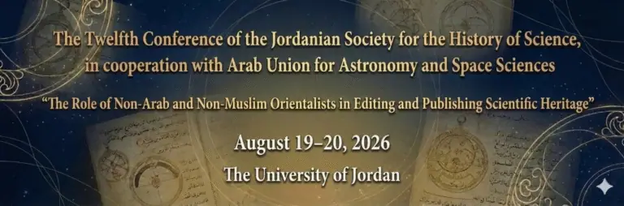

Other conferences, meetings and workshops
The Twelfth Conference of the Jordanian Society for the History of Science

The Twelfth Conference of the Jordanian Society for the History of Science, in cooperation
with Arab Union
for Astronomy
and Space Sciences
“The Role of Non-Arab and Non-Muslim Orientalists in Editing and Publishing Scientific Heritage”
August 19-20, 2026
The University of Jordan
The Twelfth Conference of the Jordanian Society for the History of Science, held under the title “The Role of Non-Arab and Non-Muslim Orientalists in Editing and Publishing Scientific Heritage,” is considered one of the prominent scientific events in the region. The conference is organized through cooperation between the Jordanian Society for the History of Science and the Arab Union for Astronomy and Space Sciences, and aims to shed light on studies and research addressing the history of science and astronomy, as well as the role of Orientalists in transmitting and translating scientific heritage across cultures.
The conference will be held at the University of Jordan in the Jordanian capital, Amman, on August 19-20, 2026.
The conference seeks to promote knowledge exchange among researchers and to strengthen scientific cooperation between Arab and international academic institutions in these fields, contributing to the development of this important scientific discipline at both the regional and international levels.
Enhancing knowledge exchange
Strengthening the role of scientific research in disseminating knowledge related to scientific and cultural heritage, and highlighting Arab and Islamic scientific contributions across various fields of science and astronomy.
Encouraging the exchange of ideas and research between Arab and non-Arab scholars in these fields, contributing to broader scientific perspectives and building academic bridges between different cultures.
Stimulating interest in historical studies and astronomical sciences, and encouraging researchers to present innovative studies that contribute to the development of new concepts in these fields.
Raising public awareness of the importance of Arab and Islamic scientific and cultural heritage, and exploring ways to preserve and develop it in light of contemporary scientific progress.
Reviewing the latest technologies and trends in space and astronomical studies, and discussing the challenges currently facing this field.
Opening avenues for cooperation among academic institutions at the Arab and international levels by inviting universities and research centers to participate in the conference activities.
Highlighting the pivotal role of Orientalists and other scholars who contributed to preserving scientific heritage and transmitting it between civilizations, and examining their impact on the development of science and astronomy throughout history.
Keeping pace with recent developments in scientific research, particularly in space studies and modern technologies related to astronomical exploration, by hosting specialized scholars to present the latest research and technologies in this field.
Conference Mission
The mission of the Twelfth Conference of the Jordanian Society for the History of Science is to bring about a qualitative shift in scientific research by highlighting the history of science and astronomy, and by strengthening the role of academic research in disseminating and documenting Arab and Islamic scientific heritage. It also seeks to deepen scientific understanding through in-depth discussions and specialized workshops, and to support research initiatives that enhance the quality of astronomical studies and expand the scope of international cooperation.
Conference Vision
The conference aims to empower international academic collaboration among scientific institutions by bringing together scientists and researchers from around the world to exchange ideas and pioneering experiences. The vision also emphasizes highlighting the scientific contributions of Arab and Islamic heritage in the field of astronomy, and advancing this field by providing a scientific environment that fosters innovation and sustainable development in space and astronomical
The Jordanian Society for the History of Science is a specialized scientific association based in Amman. It is dedicated to reviving interest in the history of science and astronomy and to promoting scientific research related to these fields in Jordan and the Arab world. The Society works to highlight the scientific legacy of Arab and Islamic civilization and to document its contributions to the development of human knowledge through research initiatives and academic communication at the local, regional, and international levels.
Mission
Vision
To become a leading academic reference for the study of the history of science and astronomy in Jordan and the Arab world, and a driving force for scientific cooperation that enhances the quality of research and strengthens its presence within scientific and educational institutions.
Areas of Work and Objectives
-
Enhancing the scientific level of the Society’s members and supporting their academic development.
-
Encouraging and supporting research related to the history of science, with particular emphasis on astronomy.
-
Conducting studies and research on sciences in Arab and Islamic civilization and documenting their impact.
-
Stimulating public and academic interest in the history of science and providing opportunities for researchers and students to participate.
-
Strengthening scientific ties among those interested in the history of science and facilitating the exchange of expertise.
-
Building effective partnerships with scientific institutions, organizations, and associations locally, regionally, and internationally.
-
Contributing to the integration of Arab and Islamic scientific achievements into university and higher-education curricula.
Main Activities and Programs
-
Organizing specialized scientific conferences, seminars, and lectures in the history of science and astronomy.
-
Supporting and documenting studies and research, and highlighting Arab and Islamic contributions through scientific publications or knowledge platforms.
-
Launching collaborative initiatives with universities and research institutions, and exchanging expertise with regional and international scientific bodies.
يُعد الاتحاد العربي لعلوم الفضاء والفلك منظمة عربية متخصصة غير حكومية، تأسست عام 1998 ومقرها الرئيسي في عمّان، الأردن. يعمل الاتحاد تحت مظلة مجلس الوحدة الاقتصادية التابع لجامعة الدول العربية، كما يتمتع بعضوية الاتحاد الفلكي الدولي (IAU). يهدف الاتحاد إلى تعزيز التعاون العلمي بين الدول العربية في مجالي الفضاء والفلك من خلال دعم مشاريع بحثية مشتركة وتنظيم مؤتمرات وندوات علمية. كما يسعى إلى نشر الوعي المجتمعي بأهمية هذه العلوم وتأثيرها على تقدم البشرية، فضلاً عن دعم الابتكار وتطوير التقنيات الحديثة في هذه المجالات.
الأنشطة الرئيسية:
تنظيم فعاليات علمية سنوية لتمكين العلماء من تبادل المعرفة.
دعم وتنفيذ مشاريع بحثية عربية مشتركة.
تقديم برامج تدريبية لبناء قدرات الباحثين في علوم الفضاء والفلك.
تعزيز التعاون الدولي مع المؤسسات العالمية الكبرى.
الجامعة الأردنية هي أقدم وأكبر مؤسسة تعليمية في الأردن، تأسست عام 1962 في العاصمة عمّان. تسعى الجامعة إلى تحقيق التميز الأكاديمي من خلال تقديم برامج أكاديمية متنوعة في مختلف التخصصات، حيث تقدم أكثر من 90 برنامجًا في البكالوريوس وأكثر من 100 برنامج في الدراسات العليا.
تتميز الجامعة بحرصها على تطوير البحث العلمي، إذ تضم مراكز بحثية متخصصة في العديد من المجالات العلمية والتقنية. كما تسعى إلى تعزيز التعاون الدولي مع الجامعات العالمية، مما يعزز من مكانتها كمنارة علمية في العالم العربي.
الرسالة والرؤية:
تسعى الجامعة الأردنية إلى إعداد خريجين متميزين يمتلكون مهارات وكفاءات عالية من خلال بيئة تعليمية وبحثية متقدمة. كما تسعى إلى تعزيز دورها الريادي في التعليم والبحث العلمي على المستوى العالمي.
البرامج الأكاديمية:
برامج البكالوريوس: تشمل مجالات الهندسة، الطب، العلوم، الآداب، الأعمال، وغيرها.
برامج الدراسات العليا: تضم برامج الماجستير والدكتوراه في العديد من التخصصات.
التعليم المستمر: تقدم برامج تدريبية متخصصة تلبي احتياجات المجتمع المحلي والإقليمي.
The Early Beginnings of Interest in Scientific Heritage
The emergence of attention to scientific heritage, its pioneers, and the paths of collecting, surveying, and cataloguing manuscripts.Contributions of Non-Arab and Non-Muslim Orientalists
Presenting examples of their notable efforts in editing, publishing, studying, and introducing scientific manuscripts to academic circles.Editing Scientific Manuscripts and Its Impact on the Development of Global Knowledge
Highlighting the scholarly value of manuscripts, methodologies of textual editing, their role in knowledge transmission, and their influence on the course of the European scientific renaissance.Scientific Institutions Hosting Heritage: Journals, Centers, Universities, and Libraries
Introducing scientific journals, research centers, universities, and libraries that have contributed—and continue to contribute—to preserving, cataloguing, editing, and publishing scientific heritage.Features of Arab and Islamic Interest in Scientific Heritage
Examples of the efforts of Arab and Islamic scholars and institutions in reviving scientific heritage, with a focus on manuscripts, scientific schools, and specialized centers.The Impact of Conferences and Scientific Events on Reviving Scientific Heritage
The role of local and international scientific gatherings in stimulating research, building scholarly networks, exchanging expertise, and encouraging editing and publishing projects.The Role of Institutions, Associations, and the Arab Union for Astronomy and Space Sciences in Revival and Dissemination
Reviewing the contributions of specialized institutions and associations—including the Arab Union—in supporting initiatives to revive scientific heritage and disseminate it through publications and scientific programs.
The Twelfth Conference of the Jordanian Society for the History of Science targets a diverse range of scientific and professional groups that contribute to achieving the conference’s objectives in the fields of astronomy, space sciences, and the history of science. The target audience includes:
Researchers and Scientists in Astronomy and Space Sciences
Researchers will have the opportunity to exchange scientific knowledge, discuss the latest developments in astronomy, space science, and space technology, and present their research papers and projects.
The conference aims to attract university professors and educators in the fields of science and astronomy from various academic institutions. It provides an opportunity to deepen their understanding of the history of science and astronomy and to expand the horizons of academic research in this field.
Postgraduate Students in Science and Astronomy
The conference represents an ideal opportunity for master’s and doctoral students interested in the history of science and astronomy to participate in scientific workshops and interact with experts and scholars. Students will also be able to present their research and projects in a stimulating academic environment.
Engineers Specialized in Space Technologies
The conference targets engineers working in the field of space and advanced technologies related to space exploration. Technological advancements in space sciences will be discussed, enhancing opportunities for collaboration between engineers and academic researchers in these areas.
Governmental and Non-Governmental Institutions Concerned with Science and Technology
The conference addresses officials from governmental and non-governmental institutions interested in science and technology, including ministries of education, national space agencies, and non-profit organizations that support scientific and educational projects in astronomy and space sciences.
Individuals Interested in Scientific and Cultural Heritage
The conference seeks to attract those interested in the history of science and astronomy in the Arab and Islamic world, including researchers in scientific heritage and ancient civilizations. It offers a platform to exchange ideas on preserving and developing scientific and cultural heritage.
Undergraduate Students and Professionals Interested in Scientific Disciplines
The conference welcomes students from various scientific disciplines who wish to learn about recent research in astronomy and space sciences. It aims to stimulate their interest in advanced scientific fields and increase their awareness of astronomical research and the history of science.
Journalists and Media Professionals Interested in Science
The conference also includes journalists and media professionals specialized in scientific reporting, who can benefit from covering advanced scientific topics and conveying important information about astronomy and space sciences to the general public.
Experts in Technology and Artificial Intelligence
Important Conference Dates
- Conference Start Date: August 19, 2026 (Wednesday)
- Conference End Date: August 20, 2026 (Thursday)
- Registration Deadline: July 17, 2026
- Deadline for Abstract Submission: July 20, 2026
- Announcement of Accepted Papers: July 25, 2026.
- Final Paper Submission (upon abstract acceptance):August 1, 2026.
Important Notes:
- To participate in the conference, participants must submit their research abstracts before the specified deadline.
- Accepted participants will be notified shortly after the final review of the submitted abstracts.
Dr. Abdul Majeed Nusayr
Phone:
Email:Dr. Awni Al-Khasawneh
(Secretary General of the Arab Union for Astronomy and Space Sciences)
Phone:
Email:
To register for the conference, please fill out this form:
Migrated from the AUASS website as published, with the formatting tidied and personal emails and phone numbers removed.
Other conferences, meetings and workshops
- The First World Conference on Space Exploration: The Moon and Beyond
- MEARIM: Middle East and Africa Regional IAU Meeting
- The Eighth Arab Conference for Astronomy and Geophysics (ACAG 8)
- The Eleventh Conference: “Important Figures in the History of Arab-Islamic Civilization in Science and Geography”
- International Symposium on Developments in Space Communications (2024)
- Disaster Management and Climate Change Mitigation in Arid Regions
- الورشة الفلكية العربية لفيزياء الشمس 2025
- The Third Regional Astronomy Summer School (3RASS)
- Scientific workshop
- The Third Arab Youth Meeting on Amateur Astronomy and Space Sciences
- الملتقى العربي الثامن لعلوم الفضاء والفلك
- المهرجان الوطني السادس عشر في علم الفلك الجماهيري
- المهرجان الوطني الثامن عشر في علم الفلك الجماهيري – قسنطينة – الجزائر
- The President of the National Institute for Astronomical and Geophysical Research visits the headquarters of the Arab Union for Astronomy and Space Science in Amman.